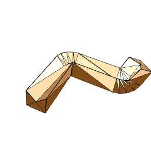
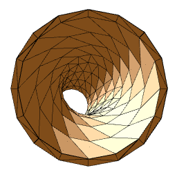
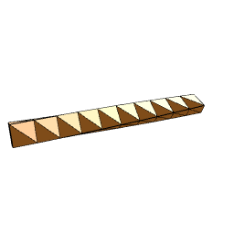
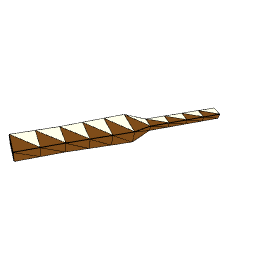
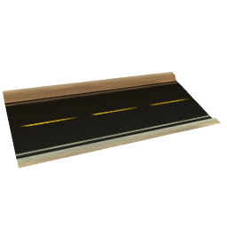
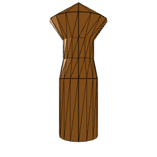
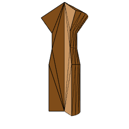

|
Ogre Procedural
0.3.0 unstable
Procedural Geometry & Textures for Ogre3D
|
Extruder
Extrusion is an operation that consists in creating a mesh from a shape moved along a path.
That operation is particularly well suited for roads, pipelines, pillars...

Figure 1. Generic extrusion
Extrusion can also be applied to a multishape.

Figure 2. Extrusion of a multishape
Special options are available to influence the way the mesh is created :

Figure 3a. Rotation Track

Figure 3b. Scale Track

Figure 3c. Shape Texture Track
Lathe
Lathe is an operation that takes a shape and rotates it around Y-axis to produce a mesh.

Figure 4. Generic Lathe
Lathe can also be restricted to a given angle range.

Figure 5. Lathe by a given angle range
Example
The Sample_Extrusion project demonstrates how to extrude various shapes.
void _calcIntersections()
Track & addKeyFrame(Ogre::Real pos, Ogre::Real value)
Inserts a new Key/Value couple anywhere on the track (it is auto-sorted anyway)
Definition: ProceduralTrack.h:72
Definition: ProceduralPath.h:53
@ ROSE_CURVE
Draw a Rose curve.
Definition: ProceduralTextureModifiers.h:1113
RoundedCornerSpline2 & addPoint(const Ogre::Vector2 &p)
Adds a control point.
Definition: ProceduralShapeGenerators.h:467
Template control point for Cubic Hermite splines.
Definition: ProceduralSplines.h:44
std::vector< Ogre::Vector2 > getPoints() const
Gets a copy of raw vector data of this shape.
Definition: ProceduralShape.h:180
Path & scale(Ogre::Real scaleX, Ogre::Real scaleY, Ogre::Real scaleZ)
Applies the given scale to all the points already defined.
Definition: ProceduralPath.h:287
Cell(TextureBufferPtr pBuffer)
Default constructor.
Definition: ProceduralTextureGenerator.h:102
BoxGenerator(Ogre::Real sizeX=1.f, Ogre::Real sizeY=1.f, Ogre::Real sizeZ=1.f, unsigned int numSegX=1, unsigned int numSegY=1, unsigned int numSegZ=1)
Contructor with arguments.
Definition: ProceduralBoxGenerator.h:49
@ METHOD_SUB_WRAP
Definition: ProceduralTextureModifiers.h:773
PrismGenerator & setHeight(Ogre::Real height)
Sets the height of the prism (default=1)
Definition: ProceduralPrismGenerator.h:71
Path & appendPathRel(const Path &other)
Appends another path at the end of this one, relative to the last point of this path.
Definition: ProceduralPath.h:103
static Ogre::Radian signedAngleTo(const Ogre::Vector2 &v1, const Ogre::Vector2 &v2)
Gives the oriented angle from v1 to v2 in the ]-PI;PI] range.
Definition: ProceduralUtils.h:160
Definition: ProceduralMeshGenerator.h:51
@ METHOD_MULTIPLY
Definition: ProceduralTextureModifiers.h:774
void setFrom2Points(const Ogre::Vector3 &a, const Ogre::Vector3 &b)
Builds the line between 2 points.
Definition: ProceduralGeometryHelpers.h:99
@ PARAMETER_R
Set parameter R.
Definition: ProceduralTextureModifiers.h:1122
@ SELECT_BLUE
Definition: ProceduralTextureModifiers.h:505
Definition: ProceduralShapeGeneratorsBase.h:42
Extruder & setPathTextureTrack(const Track *pathTextureTrack, unsigned int index=0)
Sets the track that maps path points to V texture coord (optional).
Definition: ProceduralExtruder.h:143
Extract one channel or create gray image.
Definition: ProceduralTextureModifiers.h:498
AlphaMask(TextureBufferPtr pBuffer)
Default constructor.
Definition: ProceduralTextureModifiers.h:254
Definition: ProceduralCapsuleGenerator.h:41
CatmullRomSpline3 & addPoint(const Ogre::Vector3 &pt)
Adds a control point.
Definition: ProceduralPathGenerators.h:72
std::vector< Ogre::Vector2 > & getPointsReference()
Gets raw vector data of this shape as a non-const reference.
Definition: ProceduralShape.h:186
VisualStyle
Definition: ProceduralDebugRendering.h:41
Convert height map to normal map.
Definition: ProceduralTextureModifiers.h:2031
T position
Position of the control point.
Definition: ProceduralSplines.h:47
Use alpha channel as an mask for an other image.
Definition: ProceduralTextureModifiers.h:76
void swap(Ogre::SmallVector< T, N > &LHS, Ogre::SmallVector< T, N > &RHS)
const std::vector< PathIntersection > & getIntersections() const
Definition: ProceduralPath.h:409
const Ogre::Vector2 & getPoint(int i) const
Bounds-safe method to get a point : it will allow you to go beyond the bounds.
Definition: ProceduralShape.h:200
Vector< 2, Real > Vector2
CylinderGenerator & setNumSegHeight(unsigned int numSegHeight)
Sets the number of segments along the height of the cylinder (default=1)
Definition: ProceduralCylinderGenerator.h:81
~Convolution()
Default destructor to release memory.
Definition: ProceduralTextureModifiers.h:879
bool mLog
Definition: ProceduralTextureBuffer.h:324
Extruder()
Default constructor.
Definition: ProceduralExtruder.h:66
LinePath & setPoint1(Ogre::Vector3 point1)
Sets first point.
Definition: ProceduralPathGenerators.h:180
@ LENGTH_DECISION_CONSTANT
Use a constant value.
Definition: ProceduralTextureModifiers.h:973
THRESHOLD_MODE
Selection what to do with image parts below/above the threshould value.
Definition: ProceduralTextureModifiers.h:2819
Triangulator & setSegmentListToTriangulate(std::vector< Segment2D > *segList)
Sets segment list to triangulate.
Definition: ProceduralTriangulator.h:183
TubeGenerator(Ogre::Real outerRadius=2.f, Ogre::Real innerRadius=1.f, Ogre::Real height=1.f, unsigned int numSegBase=16, unsigned int numSegHeight=1)
Constructor with arguments.
Definition: ProceduralTubeGenerator.h:51
EllipseShape & setNumSeg(unsigned int numSeg)
Sets number of segments.
Definition: ProceduralShapeGenerators.h:343
CapsuleGenerator & setNumSegments(unsigned int numSegments)
Sets the number of segments when rotating around the cylinder (default=16)
Definition: ProceduralCapsuleGenerator.h:97
CylinderGenerator & setHeight(Ogre::Real height)
Sets the height of the cylinder (default=1)
Definition: ProceduralCylinderGenerator.h:112
bool mMustWeldUnweldFirst
Definition: ProceduralMeshModifiers.h:155
virtual void translate(ScriptCompiler *compiler, const AbstractNodePtr &node)
Definition: ProceduralGeometryHelpers.h:163
CylinderUVModifier()
Definition: ProceduralMeshModifiers.h:336
TubeGenerator & setOuterRadius(Ogre::Real outerRadius)
Sets the outer radius of the tube (default=2)
Definition: ProceduralTubeGenerator.h:93
RectangleTexture(TextureBufferPtr pBuffer)
Default constructor.
Definition: ProceduralTextureModifiers.h:2319
Projects all TriangleBufferVertices on a sphere.
Definition: ProceduralMeshModifiers.h:96
Vector3 & getMinimum(void)
TriangleBuffer & invertNormals()
Applies normal inversion on the triangle buffer.
Definition: ProceduralTriangleBuffer.h:299
SpringGenerator & setNumSegCircle(int numSegCircle)
Sets the number of segments for extruding circle (default=8)
Definition: ProceduralSpringGenerator.h:169
Definition: ProceduralIcoSphereGenerator.h:41
Load shapes from an SVG file.
Definition: ProceduralSVG.h:67
T & resetTransforms()
Resets all transforms (orientation, position and scale) that would have been applied to the mesh to t...
Definition: ProceduralMeshGenerator.h:242
T & setSwitchUV(bool switchUV)
Sets whether to switch U and V texture coordinates.
Definition: ProceduralMeshGenerator.h:186
TorusKnotGenerator & setNumSegSection(unsigned int numSegSection)
Sets the number of segments along the section (default=8)
Definition: ProceduralTorusKnotGenerator.h:69
TriangleBuffer * mInputTriangleBuffer
Definition: ProceduralMeshModifiers.h:154
TubeGenerator & setInnerRadius(Ogre::Real innerRadius)
Sets the inner radius of the tube (default=1)
Definition: ProceduralTubeGenerator.h:108
T tangentAfter
Tangent just after the control point.
Definition: ProceduralSplines.h:51
WIP.
Definition: ProceduralMeshModifiers.h:143
@ DETECTION_DIFFERENCE
Difference edge detector.
Definition: ProceduralTextureModifiers.h:1328
T position
Position of the control point.
Definition: ProceduralSplines.h:133
SpherifyModifier()
Definition: ProceduralMeshModifiers.h:105
TriangleBuffer & position(const Ogre::Vector3 &pos)
Adds a new vertex to the buffer.
Definition: ProceduralTriangleBuffer.h:174
Path & insertPoint(size_t index, const Ogre::Vector3 &pt)
Inserts a point to the path.
Definition: ProceduralPath.h:89
SpherifyModifier & setRadius(Ogre::Real radius)
Definition: ProceduralMeshModifiers.h:120
MultiPath & addMultiPath(const MultiPath &multiPath)
Definition: ProceduralPath.h:381
Definition: ProceduralPathGeneratorsBase.h:42
Shape & appendShapeRel(const Shape &other)
Appends another shape at the end of this one, relative to the last point of this shape.
Definition: ProceduralShape.h:128
Colour extraction.
Definition: ProceduralTextureModifiers.h:190
NormalComputeMode mComputeMode
Definition: ProceduralMeshModifiers.h:153
Path & translate(Ogre::Real translationX, Ogre::Real translationY, Ogre::Real translationZ)
Applies the given translation to all the points already defined.
Definition: ProceduralPath.h:265
Vector< 3, Real > Vector3
COMBINE_METHOD
Methods how to combine image.
Definition: ProceduralTextureModifiers.h:768
Shape & addPointRel(const Ogre::Vector2 &pt)
Adds a point to the shape, relative to the last point added.
Definition: ProceduralShape.h:101
WeldVerticesModifier()
Definition: ProceduralMeshModifiers.h:189
@ SELECT_RED
Definition: ProceduralTextureModifiers.h:503
void rebaseOffset()
Rebase index offset : call that function before you add a new mesh to the triangle buffer.
Definition: ProceduralTriangleBuffer.h:142
copies a part of the input buffer towards the current buffer.
Definition: ProceduralTextureModifiers.h:294
SpringGenerator & setNumRound(Ogre::Real numRound)
Sets the number of segments along the height of the spring (default=1)
Definition: ProceduralSpringGenerator.h:149
ABNORMALS_COMPENSATION
Methods how to work with parameter map.
Definition: ProceduralTextureModifiers.h:80
@ SELECT_ALPHA
Definition: ProceduralTextureModifiers.h:506
CubicHermiteSpline3 & addPoint(const Ogre::Vector3 &p, const Ogre::Vector3 &tangent)
Adds a control point.
Definition: ProceduralPathGenerators.h:123
Lathe & setClosed(bool closed)
Sets whether the lathe is closed or not.
Definition: ProceduralLathe.h:92
RoundedCornerSpline3()
Default constructor.
Definition: ProceduralPathGenerators.h:235
ShowNormalsGenerator()
Definition: ProceduralDebugRendering.h:53
CubicHermiteSpline2 & addPoint(const Ogre::Vector2 &p, CubicHermiteSplineAutoTangentMode autoTangentMode=AT_CATMULL)
Adds a control point.
Definition: ProceduralShapeGenerators.h:66
const Ogre::Vector3 & getPoint(int i) const
Safely gets a given point.
Definition: ProceduralPath.h:160
Shape & translate(Ogre::Real translationX, Ogre::Real translationY)
Applies the given translation to all the points already defined.
Definition: ProceduralShape.h:406
TriangleBuffer & index(int i)
Adds an index to the index buffer.
Definition: ProceduralTriangleBuffer.h:218
@ AT_CATMULL
Definition: ProceduralSplines.h:37
T & setEnableNormals(bool enableNormals)
Sets whether normals are enabled or not (default=true)
Definition: ProceduralMeshGenerator.h:170
Lathe & setNumSeg(unsigned int numSeg)
Sets the number of segments when rotating around the axis (default=16)
Definition: ProceduralLathe.h:65
TriangleShape()
Default constructor.
Definition: ProceduralShapeGenerators.h:376
static T Clamp(T val, T minval, T maxval)
Image(TextureBufferPtr pBuffer)
Default constructor.
Definition: ProceduralTextureGenerator.h:345
CRACK_QUALITY
High quality settings.
Definition: ProceduralTextureModifiers.h:978
std::vector< Vertex > mVertices
Definition: ProceduralTriangleBuffer.h:61
Ogre::uint getHeight() const
Get the height of the stored image in px.
Definition: ProceduralTextureBuffer.h:294
Alpha(TextureBufferPtr pBuffer)
Default constructor.
Definition: ProceduralTextureModifiers.h:200
Expands bright areas over darker areas.
Definition: ProceduralTextureModifiers.h:1228
Load an image from a resource.
Definition: ProceduralTextureGenerator.h:334
BoxUVModifier & setBoxCenter(const Ogre::Vector3 &boxCenter)
Definition: ProceduralMeshModifiers.h:394
BoxGenerator & setNumSegZ(unsigned int numSegZ)
Sets the number of segments along Z axis (default=1)
Definition: ProceduralBoxGenerator.h:125
unsigned int mFirstVertex
Definition: ProceduralTriangleBuffer.h:53
T & setScale(Ogre::Real scale)
Sets a uniform scale baked into the resulting mesh.
Definition: ProceduralMeshGenerator.h:226
RandomPixels(TextureBufferPtr pBuffer)
Default constructor.
Definition: ProceduralTextureModifiers.h:2253
CYCLOID_TYPE
Which type of cycloid should be painted.
Definition: ProceduralTextureModifiers.h:1107
KochanekBartelsSplineControlPoint(const T &p, Ogre::Real t, Ogre::Real b, Ogre::Real c)
Constructor with arguments.
Definition: ProceduralSplines.h:145
PrismGenerator & setRadius(Ogre::Real radius)
Sets the radius of the prism (default=1)
Definition: ProceduralPrismGenerator.h:59
Ogre::Vector2 mB
Definition: ProceduralGeometryHelpers.h:143
Triangulator & setManualSuperTriangle(Triangle2D *tri)
Sets manual super triangle (instead of letting Triangulator guessing it)
Definition: ProceduralTriangulator.h:190
static Ogre::Radian angleTo(const Ogre::Vector2 &v1, const Ogre::Vector2 &v2)
Gives the oriented angle from v1 to v2 in the [0;2PI[ range.
Definition: ProceduralUtils.h:147
BoxUVModifier & setBoxSize(const Ogre::Vector3 &boxSize)
Definition: ProceduralMeshModifiers.h:388
ConeGenerator & setHeight(Ogre::Real height)
Sets the height of the cone (default=1)
Definition: ProceduralConeGenerator.h:102
Edge detection on input image.
Definition: ProceduralTextureModifiers.h:1321
Marble(TextureBufferPtr pBuffer)
Default constructor.
Definition: ProceduralTextureGenerator.h:441
KochanekBartelsSpline2 & addPoint(Ogre::Vector2 p, Ogre::Real t, Ogre::Real b, Ogre::Real c)
Adds a control point to the spline.
Definition: ProceduralShapeGenerators.h:194
@ COMPENSATION_HEIGHT
Use as a height map.
Definition: ProceduralTextureModifiers.h:83
TorusKnotGenerator & setRadius(Ogre::Real radius)
Sets the main radius of the knot (default=1)
Definition: ProceduralTorusKnotGenerator.h:93
Ogre::String mName
Definition: ProceduralTextureBuffer.h:323
void computeCatmullRomPoints(const T &P1, const T &P2, const T &P3, const T &P4, unsigned int numSeg, std::vector< T > &pointList)
Definition: ProceduralSplines.h:114
Path & translate(const Ogre::Vector3 &translation)
Applies the given translation to all the points already defined.
Definition: ProceduralPath.h:251
Combine(TextureBufferPtr pBuffer)
Default constructor.
Definition: ProceduralTextureModifiers.h:795
Distort(TextureBufferPtr pBuffer)
Default constructor.
Definition: ProceduralTextureModifiers.h:1284
Shape & insertPoint(size_t index, Ogre::Real x, Ogre::Real y)
Inserts a point to the shape.
Definition: ProceduralShape.h:85
BaseSpline3()
Definition: ProceduralPathGeneratorsBase.h:50
Shape realizeShape()
Builds the shape.
Definition: ProceduralShapeGenerators.h:247
Ogre::Vector3 mPosition
Definition: ProceduralTriangleBuffer.h:44
Circle(Ogre::Vector2 center, Ogre::Real radius)
Contructor with arguments.
Definition: ProceduralGeometryHelpers.h:52
Real valueRadians() const
HelixPath()
Default constructor.
Definition: ProceduralSpringGenerator.h:52
T & setScale(const Ogre::Vector3 &scale)
Sets a scale baked into the resulting mesh.
Definition: ProceduralMeshGenerator.h:218
BoxGenerator & setSizeZ(Ogre::Real sizeZ)
Sets size along Z axis (default=1)
Definition: ProceduralBoxGenerator.h:80
Vortex(TextureBufferPtr pBuffer)
Default constructor.
Definition: ProceduralTextureModifiers.h:2893
Builds a path from a Catmull-Rom Spline.
Definition: ProceduralPathGenerators.h:47
static Ogre::Vector2 min(const Ogre::Vector2 &v1, const Ogre::Vector2 &v2)
Gets the min of the coordinates between 2 vectors.
Definition: ProceduralUtils.h:60
TriangleBuffer()
Definition: ProceduralTriangleBuffer.h:71
bool isClosed() const
Gets whether the shape is closed or not.
Definition: ProceduralShape.h:259
Definition: ProceduralMeshModifiers.h:295
Lerp(TextureBufferPtr pBuffer)
Default constructor.
Definition: ProceduralTextureModifiers.h:1797
Noise(TextureBufferPtr pBuffer)
Default constructor.
Definition: ProceduralTextureGenerator.h:513
KochanekBartelsSplineControlPoint(const T &p)
Constructor with tension=bias=continuity=0.
Definition: ProceduralSplines.h:147
Ogre::Vector3 getAvgDirection(unsigned int i) const
Returns the local direction at the current point.
Definition: ProceduralPath.h:205
Ogre::SimpleSpline toSimpleSpline() const
Outputs current spline to an Ogre spline.
Definition: ProceduralPathGenerators.h:63
Shape & scale(const Ogre::Vector2 &amount)
Applies the given scale to all the points already defined.
Definition: ProceduralShape.h:461
TriangleBuffer & normal(const Ogre::Vector3 &normal)
Sets the normal of the current vertex.
Definition: ProceduralTriangleBuffer.h:194
Extruder & setCapped(bool capped)
Sets whether caps are added to the extremities or not (not closed paths only)
Definition: ProceduralExtruder.h:153
CylinderUVModifier & setHeight(Ogre::Real height)
Definition: ProceduralMeshModifiers.h:353
static Ogre::AxisAlignedBox AABBfromPoints(std::vector< Ogre::Vector3 > points)
Builds an AABB from a list of points.
Definition: ProceduralUtils.h:72
Boolean & setBooleanOperation(BooleanOperation op)
Definition: ProceduralBoolean.h:62
PlaneGenerator & setNormal(Ogre::Vector3 normal)
Sets the normal of the plane.
Definition: ProceduralPlaneGenerator.h:91
Flip(TextureBufferPtr pBuffer)
Default constructor.
Definition: ProceduralTextureModifiers.h:1575
const Ogre::Vector2 & safeGetPoint(unsigned int i) const
Safely gets a control point.
Definition: ProceduralShapeGenerators.h:481
const Ogre::Vector3 & safeGetPoint(unsigned int i) const
Safely gets a control point.
Definition: ProceduralPathGenerators.h:317
Convolution(TextureBufferPtr pBuffer)
Default constructor.
Definition: ProceduralTextureModifiers.h:863
Shape extractSubShape(unsigned int first, unsigned int last)
Extracts a part of the shape as a new shape.
Definition: ProceduralShape.h:146
void setMinimum(const Vector3 &vec)
Create lines that can be randomly cracked or follow a normal map.
Definition: ProceduralTextureModifiers.h:966
RotationZoom(TextureBufferPtr pBuffer)
Default constructor.
Definition: ProceduralTextureModifiers.h:2462
CYCLOID_PARAMETER
Which parameter should be set.
Definition: ProceduralTextureModifiers.h:1120
TriangleBuffer * mInputTriangleBuffer
Definition: ProceduralMeshModifiers.h:221
@ FLIP_VERTICAL
Flip vertical.
Definition: ProceduralTextureModifiers.h:1563
Side
Definition: ProceduralShape.h:48
size_t getSegCount() const
Gets the number of segments in that shape.
Definition: ProceduralShape.h:253
@ METHOD_ADD_CLAMP
Definition: ProceduralTextureModifiers.h:770
HelixPath & setNumSegPath(unsigned int numSeg)
Sets number of segments along the path per turn.
Definition: ProceduralSpringGenerator.h:86
CapsuleGenerator & setNumSegHeight(unsigned int numSegHeight)
Sets the number of segments along the axis of the cylinder (default=1)
Definition: ProceduralCapsuleGenerator.h:109
bool epsilonEquivalent(const Segment3D &other) const
Definition: ProceduralGeometryHelpers.h:200
void computeKochanekBartelsPoints(const KochanekBartelsSplineControlPoint< T > &P1, const KochanekBartelsSplineControlPoint< T > &P2, const KochanekBartelsSplineControlPoint< T > &P3, const KochanekBartelsSplineControlPoint< T > &P4, unsigned int numSeg, std::vector< T > &pointList)
Definition: ProceduralSplines.h:151
Invert(TextureBufferPtr pBuffer)
Default constructor.
Definition: ProceduralTextureModifiers.h:1703
KochanekBartelsSpline2 & addPoint(Ogre::Real x, Ogre::Real y)
Adds a control point.
Definition: ProceduralShapeGenerators.h:166
Twist some fragment of input image.
Definition: ProceduralTextureModifiers.h:2879
UnweldVerticesModifier()
Definition: ProceduralMeshModifiers.h:219
BoxGenerator & setNumSegY(unsigned int numSegY)
Sets the number of segments along Y axis (default=1)
Definition: ProceduralBoxGenerator.h:113
BezierCurve3()
Default constructor.
Definition: ProceduralPathGenerators.h:290
Produces a shape from Cubic Hermite control points.
Definition: ProceduralShapeGenerators.h:450
Ogre::Real getTotalLength() const
Returns the total lineic length of that shape.
Definition: ProceduralShape.h:549
Shape & mirror(bool flip=false)
Create a symetric copy at the origin point.
Definition: ProceduralShape.h:483
void computeCubicHermitePoints(const CubicHermiteSplineControlPoint< T > &pointBefore, const CubicHermiteSplineControlPoint< T > &pointAfter, unsigned int numSeg, std::vector< T > &pointList)
Definition: ProceduralSplines.h:96
void endSection(Section §ion)
Definition: ProceduralTriangleBuffer.h:95
CubicHermiteSpline3 & addPoint(Ogre::Real x, Ogre::Real y, Ogre::Real z, CubicHermiteSplineAutoTangentMode autoTangentMode=AT_CATMULL)
Adds a control point.
Definition: ProceduralPathGenerators.h:139
TextureBufferPtr mBuffer
Definition: ProceduralTextureBuffer.h:322
const String & getName(void) const
MappingType
Definition: ProceduralMeshModifiers.h:364
AddressingMode mAddressingMode
Adressing mode of the track (see the enum definition for more details)
Definition: ProceduralTrack.h:53
RoundedCornerSpline2 & addPoint(Ogre::Real x, Ogre::Real y)
Adds a control point.
Definition: ProceduralShapeGenerators.h:474
Draw a rectangle.
Definition: ProceduralTextureModifiers.h:2305
static Degree Abs(const Degree &dValue)
PlaneUVModifier & setInputTriangleBuffer(TriangleBuffer *inputTriangleBuffer)
Definition: ProceduralMeshModifiers.h:254
Solid(TextureBufferPtr pBuffer)
Default constructor.
Definition: ProceduralTextureGenerator.h:573
Path getPath(unsigned int i) const
Definition: ProceduralPath.h:397
@ MIRROR_Y_XZ
Y : XZ.
Definition: ProceduralTextureModifiers.h:92
CalculateNormalsModifier & setMustWeldUnweldFirst(bool mustWeldUnweldFirst)
Tells if the mesh must be first weld (NCM_VERTEX mode) or unweld (NCM_TRIANGLE) before computing norm...
Definition: ProceduralMeshModifiers.h:174
PlaneGenerator & setSize(Ogre::Vector2 size)
Sets the size (default=1,1)
Definition: ProceduralPlaneGenerator.h:124
Invert image.
Definition: ProceduralTextureModifiers.h:1696
Path & close()
Define the path as being closed.
Definition: ProceduralPath.h:129
RoundedCornerSpline2 & setRadius(Ogre::Real radius)
Sets the radius of the corners.
Definition: ProceduralShapeGenerators.h:460
Triangle2D(const Ogre::Vector2 &a, const Ogre::Vector2 &b, const Ogre::Vector2 &c)
Definition: ProceduralGeometryHelpers.h:220
PlaneGenerator & setSizeY(Ogre::Real sizeY)
Sets the size of the plane along local Y axis.
Definition: ProceduralPlaneGenerator.h:115
const size_t getPointCount() const
Gets the number of control points.
Definition: ProceduralShapeGenerators.h:548
CatmullRomSpline3 & addPoint(Ogre::Real x, Ogre::Real y, Ogre::Real z)
Adds a control point.
Definition: ProceduralPathGenerators.h:79
Triangulator & setShapeToTriangulate(const Shape *shape)
Sets shape to triangulate.
Definition: ProceduralTriangulator.h:168
TriangleBuffer & scale(Ogre::Real x, Ogre::Real y, Ogre::Real z)
Applies an immediate scale operation to that triangle buffer.
Definition: ProceduralTriangleBuffer.h:293
const ControlPoint & safeGetPoint(unsigned int i) const
Safely gets a control point.
Definition: ProceduralShapeGenerators.h:180
@ METHOD_MULTIPLY2
Definition: ProceduralTextureModifiers.h:775
Lathe & setCapped(bool capped)
Sets whether the lathe is capped or not (default=true) Only makes sense if the lathe is not closed.
Definition: ProceduralLathe.h:100
Definition: ProceduralMeshModifiers.h:276
CapsuleGenerator(Ogre::Real radius, Ogre::Real height, unsigned int numRings, unsigned int numSegments, unsigned int numSegHeight)
Constructor with arguments.
Definition: ProceduralCapsuleGenerator.h:60
static Real Cos(const Radian &fValue, bool useTables=false)
const size_t getPointCount() const
Gets the number of control points.
Definition: ProceduralPathGenerators.h:157
T & setNumTexCoordSet(unsigned char numTexCoordSet)
Sets the number of texture coordintate sets (default=1)
Definition: ProceduralMeshGenerator.h:179
Shape & addPointRel(Ogre::Real x, Ogre::Real y)
Adds a point to the shape, relative to the last point added.
Definition: ProceduralShape.h:111
void clear()
Clears all the content.
Definition: ProceduralMultiShape.h:72
SpringGenerator & setNumSegPath(int numSegPath)
Sets the number of segments along helix path (default=10)
Definition: ProceduralSpringGenerator.h:159
@ SIDE_LEFT
Definition: ProceduralShape.h:48
unsigned int mNumSeg
The number of segments between 2 control points.
Definition: ProceduralPathGeneratorsBase.h:46
@ DETECTION_HOMOGENITY
Homogenity edge detector.
Definition: ProceduralTextureModifiers.h:1327
static int modulo(int n, int cap)
An extend version of the standard modulo, in that int values are "wrapped" in both directions,...
Definition: ProceduralUtils.h:121
static Ogre::Vector2 max(const Ogre::Vector2 &v1, const Ogre::Vector2 &v2)
Gets the max of the coordinates between 2 vectors.
Definition: ProceduralUtils.h:66
BezierCurve3 & addPoint(Ogre::Real x, Ogre::Real y, Ogre::Real z)
Adds a control point.
Definition: ProceduralPathGenerators.h:310
PlaneGenerator & setNumSegY(unsigned int numSegY)
Sets the number of segments along local Y axis.
Definition: ProceduralPlaneGenerator.h:79
Section beginSection(std::string sectionName="")
Definition: ProceduralTriangleBuffer.h:84
LinePath & betweenPoints(Ogre::Vector3 point1, Ogre::Vector3 point2)
Builds a linepath between 2 points.
Definition: ProceduralPathGenerators.h:204
Sharpen(TextureBufferPtr pBuffer)
Default constructor.
Definition: ProceduralTextureModifiers.h:2617
Labyrinth(TextureBufferPtr pBuffer)
Default constructor.
Definition: ProceduralTextureGenerator.h:386
Create an oil painted image.
Definition: ProceduralTextureModifiers.h:2071
T & setVTile(Ogre::Real vTile)
Sets V Tile, ie the number by which v texture coordinates are multiplied (default=1)
Definition: ProceduralMeshGenerator.h:150
MultiShape()
Default constructor.
Definition: ProceduralMultiShape.h:50
Triangulator & setMultiShapeToTriangulate(const MultiShape *multiShape)
Sets multi shape to triangulate.
Definition: ProceduralTriangulator.h:176
@ QUALITY_ALPHA
Use alpha channel.
Definition: ProceduralTextureModifiers.h:981
const Vector3 & getPoint(unsigned short index) const
Represents a 2D triangle.
Definition: ProceduralGeometryHelpers.h:216
TriangleBuffer & textureCoord(const Ogre::Vector2 &vec)
Sets the texture coordinates of the current vertex.
Definition: ProceduralTriangleBuffer.h:208
Represents a line in 3D.
Definition: ProceduralGeometryHelpers.h:86
Ogre::Vector2 getAvgDirection(unsigned int i) const
Gets the average between before direction and after direction.
Definition: ProceduralShape.h:291
const std::vector< Vertex > & getVertices() const
Gets a non-modifiable reference to vertices.
Definition: ProceduralTriangleBuffer.h:122
IcoSphereGenerator & setRadius(Ogre::Real radius)
Sets the radius of the sphere (default=1)
Definition: ProceduralIcoSphereGenerator.h:63
@ LENGTH_DECISION_RANDOM
Use a random number generator.
Definition: ProceduralTextureModifiers.h:972
@ MIRROR_X_YZ
X : YZ.
Definition: ProceduralTextureModifiers.h:91
Path & reset()
Clears the content of the Path.
Definition: ProceduralPath.h:119
Convolution filter.
Definition: ProceduralTextureModifiers.h:848
SpherifyModifier & setCenter(Ogre::Vector3 center)
Definition: ProceduralMeshModifiers.h:129
Channel(TextureBufferPtr pBuffer)
Default constructor.
Definition: ProceduralTextureModifiers.h:518
KochanekBartelsSplineControlPoint< Ogre::Vector2 > ControlPoint
Definition: ProceduralShapeGenerators.h:160
@ BLUR_BOX
Use simplified block filter to blur.
Definition: ProceduralTextureModifiers.h:432
Lathe & setAngleBegin(Ogre::Radian angleBegin)
Sets the angle to begin lathe with (default=0) Automatically makes the lathe not closed.
Definition: ProceduralLathe.h:75
Plane(const Ogre::Vector3 &normal, const Ogre::Vector3 &pos)
Contructor with arguments.
Definition: ProceduralGeometryHelpers.h:72
const Ogre::Vector2 & safeGetPoint(unsigned int i) const
Safely gets a control point.
Definition: ProceduralShapeGenerators.h:540
bool mClosed
Whether the shape will be closed or not.
Definition: ProceduralShapeGeneratorsBase.h:48
Boolean & setMesh2(TriangleBuffer *tb)
Definition: ProceduralBoolean.h:56
int getSegCount() const
Gets the number of segments in the path Takes into accound whether path is closed or not.
Definition: ProceduralPath.h:170
Ogre::Vector3 getPosition(unsigned int i, Ogre::Real coord) const
Gets a position on the shape with index of the point and a percentage of position on the segment.
Definition: ProceduralPath.h:221
TriangleBuffer * mInputTriangleBuffer
Definition: ProceduralMeshModifiers.h:191
bool isClosed() const
Tells if the path is closed or not.
Definition: ProceduralPath.h:138
Create a texture consisting of cells aligned in a grid, or a chessboard.
Definition: ProceduralTextureGenerator.h:71
Creates a wood slice image.
Definition: ProceduralTextureGenerator.h:666
HemisphereUVModifier()
Definition: ProceduralMeshModifiers.h:303
Side getOutSide() const
Gets which side is out.
Definition: ProceduralShape.h:240
EllipseShape & setRadiusY(Ogre::Real radius)
Sets radius in y direction.
Definition: ProceduralShapeGenerators.h:333
CubicHermiteSpline3 & addPoint(const Ogre::Vector3 &p, const Ogre::Vector3 &before, const Ogre::Vector3 &after)
Adds a control point.
Definition: ProceduralPathGenerators.h:117
Line2D(Ogre::Vector2 point, Ogre::Vector2 direction)
Contructor with arguments.
Definition: ProceduralGeometryHelpers.h:121
Ogre::Vector3 mDirection
Definition: ProceduralGeometryHelpers.h:89
Recomputes the mesh's UVs based on its projection on a plane.
Definition: ProceduralMeshModifiers.h:235
T & setScale(Ogre::Real x, Ogre::Real y, Ogre::Real z)
Sets a scale baked into the resulting mesh.
Definition: ProceduralMeshGenerator.h:234
Ogre::Vector2 mUVOrigin
Rectangle in which the texture coordinates will be placed.
Definition: ProceduralMeshGenerator.h:70
PlaneGenerator & setSizeX(Ogre::Real sizeX)
Sets the size of the plane along local X axis.
Definition: ProceduralPlaneGenerator.h:103
size_t y
Definition: ProceduralGeometryHelpers.h:245
static Real parseReal(const String &val, Real defaultValue=0)
Builds a shape from a Kochanek Bartels spline.
Definition: ProceduralShapeGenerators.h:157
Ogre::Vector3 mPoint
Definition: ProceduralGeometryHelpers.h:88
Path & reverse()
Reverses direction of the path.
Definition: ProceduralPath.h:335
@ BLUR_MEAN
Use mean filter to blur.
Definition: ProceduralTextureModifiers.h:433
T tangentBefore
Tangent just before the control point.
Definition: ProceduralSplines.h:49
CalculateNormalsModifier()
Definition: ProceduralMeshModifiers.h:146
std::vector< PathCoordinate > PathIntersection
Definition: ProceduralPath.h:363
Apply normal (ie.
Definition: ProceduralTextureModifiers.h:1273
Ogre::Vector2 mUV
Definition: ProceduralTriangleBuffer.h:46
T & setNumSeg(unsigned int numSeg)
Sets the number of segments between 2 control points.
Definition: ProceduralShapeGeneratorsBase.h:70
Linear interpolation.
Definition: ProceduralTextureModifiers.h:1785
Represents a 2D segment.
Definition: ProceduralGeometryHelpers.h:140
Shape & mirrorAroundAxis(const Ogre::Vector2 &axis, bool flip=false)
Create a symetric copy at a given axis.
Definition: ProceduralShape.h:527
unsigned int getShapeCount() const
Returns the number of shapes in that MultiShape.
Definition: ProceduralMultiShape.h:93
TorusGenerator & setNumSegSection(unsigned int numSegSection)
Sets the number of segments on the section circle.
Definition: ProceduralTorusGenerator.h:65
Definition: ProceduralTubeGenerator.h:41
MeshGenerator()
Default constructor.
Definition: ProceduralMeshGenerator.h:92
@ MIRROR_NONE
None.
Definition: ProceduralTextureModifiers.h:90
T & setPosition(const Ogre::Vector3 &position)
Sets a translation baked into the resulting mesh.
Definition: ProceduralMeshGenerator.h:201
Abnormals(TextureBufferPtr pBuffer)
Default constructor.
Definition: ProceduralTextureModifiers.h:109
HelixPath & setHeight(Ogre::Real height)
Sets the height of the helix (default=1.0)
Definition: ProceduralSpringGenerator.h:56
const std::vector< Ogre::Vector2 >::size_type getPointCount() const
Gets number of points in current point list.
Definition: ProceduralShape.h:213
CapsuleGenerator & setHeight(Ogre::Real height)
Sets the height of the cylinder part of the capsule (default=1)
Definition: ProceduralCapsuleGenerator.h:121
CANNEL_SELECTION
Definition: ProceduralTextureModifiers.h:501
Implements a Delaunay Triangulation algorithm.
Definition: ProceduralTriangulator.h:50
bool mEnableNormals
Whether to produces normals or not.
Definition: ProceduralMeshGenerator.h:64
CubicHermiteSplineAutoTangentMode autoTangentBefore
Auto tangent mode for the tangent just before the control point.
Definition: ProceduralSplines.h:53
Creates a cloud structured image.
Definition: ProceduralTextureGenerator.h:174
PlaneGenerator()
Definition: ProceduralPlaneGenerator.h:52
Line(Ogre::Vector3 point, Ogre::Vector3 direction)
Contructor with arguments.
Definition: ProceduralGeometryHelpers.h:96
int mEstimatedVertexCount
Definition: ProceduralTriangleBuffer.h:63
Shape & translate(const Ogre::Vector2 &translation)
Applies the given translation to all the points already defined.
Definition: ProceduralShape.h:393
const Ogre::Vector3 & safeGetPoint(unsigned int i) const
Safely gets a control point.
Definition: ProceduralPathGenerators.h:86
Definition: ProceduralTriangleBuffer.h:42
Normals(TextureBufferPtr pBuffer)
Default constructor.
Definition: ProceduralTextureModifiers.h:2041
@ METHOD_ALPHA
Definition: ProceduralTextureModifiers.h:777
PrismGenerator & setCapped(bool capped)
Sets whether the prism has endings or not (default=true)
Definition: ProceduralPrismGenerator.h:104
const std::map< PathCoordinate, PathIntersection > & getIntersectionsMap() const
Definition: ProceduralPath.h:404
static Real Sin(const Radian &fValue, bool useTables=false)
Wood(TextureBufferPtr pBuffer)
Default constructor.
Definition: ProceduralTextureGenerator.h:678
Plane(Ogre::Real a, Ogre::Real b, Ogre::Real c, Ogre::Real d)
Definition: ProceduralGeometryHelpers.h:74
static Ogre::Vector3 min(const Ogre::Vector3 &v1, const Ogre::Vector3 &v2)
Gets the min of the coordinates between 2 vectors.
Definition: ProceduralUtils.h:48
Real squaredDistance(const Vector &rhs) const
Boolean()
Definition: ProceduralBoolean.h:48
TriangleBuffer & vertex(const Ogre::Vector3 &position, const Ogre::Vector3 &normal, const Ogre::Vector2 &uv)
Adds a new vertex to the buffer.
Definition: ProceduralTriangleBuffer.h:162
Polygon(TextureBufferPtr pBuffer)
Default constructor.
Definition: ProceduralTextureModifiers.h:2132
CubicHermiteSplineControlPoint()
Default constructor.
Definition: ProceduralSplines.h:58
Ogre::Vector2 getPosition(Ogre::Real coord) const
Gets a position on the shape from lineic coordinate.
Definition: ProceduralShape.h:578
Shape & setOutSide(Side side)
Sets which side (left or right) is on the outside of the shape.
Definition: ProceduralShape.h:233
void addMultiShape(const MultiShape &other)
Append every shape of an other multishape to the current multiShape.
Definition: ProceduralMultiShape.h:99
@ MODE_EXPAND_UPWARDS
Set pixel above threshould value to white.
Definition: ProceduralTextureModifiers.h:2822
Path & appendPath(const Path &other)
Appends another path at the end of this one.
Definition: ProceduralPath.h:96
BooleanOperation
Definition: ProceduralBoolean.h:38
const ControlPoint & safeGetPoint(unsigned int i) const
Safely gets a control point.
Definition: ProceduralShapeGenerators.h:88
std::vector< Ogre::Vector3 > & getPointsReference()
Gets raw vector data of this path as a non-const reference.
Definition: ProceduralPath.h:150
TorusGenerator & setSectionRadius(Ogre::Real sectionRadius)
Sets the radius of the section circle.
Definition: ProceduralTorusGenerator.h:101
RoundedBoxGenerator & setSizeY(Ogre::Real sizeY)
Sets the size of the box along Y axis.
Definition: ProceduralRoundedBoxGenerator.h:69
TriangleShape & setLength(Ogre::Real length)
Creates an equilateral triangle.
Definition: ProceduralShapeGenerators.h:380
Ogre::Vector2 getAvgNormal(unsigned int i) const
Gets the "normal" of that point ie an average between before and after normals.
Definition: ProceduralShape.h:313
bool isZeroLength() const
Ogre::Vector3 mNormal
Definition: ProceduralTriangleBuffer.h:45
Builds a ellipse shape.
Definition: ProceduralShapeGenerators.h:312
Template control point for KochanekBartels's splines.
Definition: ProceduralSplines.h:130
Ogre::Vector2 getNormalBefore(unsigned int i) const
Gets the shape normal just before that point.
Definition: ProceduralShape.h:305
Produces a shape from Cubic Hermite control points.
Definition: ProceduralShapeGenerators.h:46
const Ogre::Vector3 & safeGetPoint(unsigned int i) const
Safely gets a control point.
Definition: ProceduralPathGenerators.h:259
static Ogre::Vector3 vec2ToVec3Y(const Ogre::Vector2 &pos)
Maps a vector2 to vector3, with Y=0.
Definition: ProceduralUtils.h:179
Extruder & setExtrusionPath(const Path *extrusionPath)
Sets the extrusion path.
Definition: ProceduralExtruder.h:94
Apply an illumination on a surface.
Definition: ProceduralTextureModifiers.h:1841
static const String DEFAULT_RESOURCE_GROUP_NAME
Shape & scale(Ogre::Real scaleX, Ogre::Real scaleY)
Applies the given scale to all the points already defined.
Definition: ProceduralShape.h:446
SHARP_TYPE
List of algorithms to blur.
Definition: ProceduralTextureModifiers.h:2601
CubicHermiteSpline2 & addPoint(Ogre::Real x, Ogre::Real y, CubicHermiteSplineAutoTangentMode autoTangentMode=AT_CATMULL)
Adds a control point.
Definition: ProceduralShapeGenerators.h:77
base class for material generation classes.
Definition: ProceduralTextureBuffer.h:319
bool isInsertPoint() const
Tells whether we should add new points to principal curve if a key is defined here but not on princip...
Definition: ProceduralTrack.h:79
Definition: ProceduralShape.h:57
Crack(TextureBufferPtr pBuffer)
Default constructor.
Definition: ProceduralTextureModifiers.h:1000
This class creates a visualisation of the normals of a TriangleBuffer.
Definition: ProceduralDebugRendering.h:38
Extends the Ogre::Plane class to be able to compute the intersection between 2 planes.
Definition: ProceduralGeometryHelpers.h:66
@ MODE_GRID
Paint cells on a grid.
Definition: ProceduralTextureGenerator.h:77
TriangleBuffer & translate(const Ogre::Vector3 &amount)
Applies the translation immediately to all the points contained in that triangle buffer.
Definition: ProceduralTriangleBuffer.h:250
static Radian ACos(Real fValue)
Colours(TextureBufferPtr pBuffer)
Default constructor.
Definition: ProceduralTextureModifiers.h:679
CapsuleGenerator & setNumRings(unsigned int numRings)
Sets the number of segments of the sphere part (default=8)
Definition: ProceduralCapsuleGenerator.h:85
bool operator()(const Ogre::Vector2 &one, const Ogre::Vector2 &two) const
Definition: ProceduralGeometryHelpers.h:165
Render a glow.
Definition: ProceduralTextureModifiers.h:1605
Rotate & zoom image.
Definition: ProceduralTextureModifiers.h:2447
Shape & rotate(Ogre::Radian angle)
Applies the given rotation to all the points already defined.
Definition: ProceduralShape.h:416
Definition: ProceduralTorusKnotGenerator.h:41
Definition: ProceduralPath.h:351
SphereGenerator(Ogre::Real radius=1.f, unsigned int numRings=16, unsigned int numSegments=16)
Constructor with arguments.
Definition: ProceduralSphereGenerator.h:49
TorusKnotGenerator & setP(int p)
Sets the p parameter of the knot (default=2)
Definition: ProceduralTorusKnotGenerator.h:117
Definition: ProceduralBoolean.h:32
T & setPosition(Ogre::Real x, Ogre::Real y, Ogre::Real z)
Sets a translation baked into the resulting mesh.
Definition: ProceduralMeshGenerator.h:209
std::map< unsigned int, const Track * > TrackMap
Definition: ProceduralExtruder.h:53
Path & scale(Ogre::Real amount)
Applies the given scale to all the points already defined.
Definition: ProceduralPath.h:275
unsigned int mNumSeg
The number of segments between 2 control points.
Definition: ProceduralShapeGeneratorsBase.h:46
RoundedBoxGenerator & setSizeX(Ogre::Real sizeX)
Sets the size of the box along X axis.
Definition: ProceduralRoundedBoxGenerator.h:57
@ AT_NONE
Definition: ProceduralSplines.h:37
RoundedBoxGenerator()
Definition: ProceduralRoundedBoxGenerator.h:50
BoxUVModifier & setInputTriangleBuffer(TriangleBuffer *inputTriangleBuffer)
Definition: ProceduralMeshModifiers.h:382
CubicHermiteSplineAutoTangentMode autoTangentAfter
Auto tangent mode for the tangent just after the control point.
Definition: ProceduralSplines.h:55
Path & insertPoint(size_t index, Ogre::Real x, Ogre::Real y, Ogre::Real z)
Inserts a point to the path.
Definition: ProceduralPath.h:80
int globalOffset
Definition: ProceduralTriangleBuffer.h:62
RoundedCornerSpline2()
Definition: ProceduralShapeGenerators.h:457
Shape & mirrorAroundPoint(Ogre::Vector2 point, bool flip=false)
Create a symetric copy at a given point.
Definition: ProceduralShape.h:504
std::vector< int > & getIndices()
Gets a modifiable reference to vertices.
Definition: ProceduralTriangleBuffer.h:128
const size_t getPointCount() const
Gets the number of control points.
Definition: ProceduralPathGenerators.h:94
int mEstimatedIndexCount
Definition: ProceduralTriangleBuffer.h:64
Definition: ProceduralPlaneGenerator.h:43
CELL_PATTERN
Mode how to construct cells.
Definition: ProceduralTextureGenerator.h:82
Produces a path from Cubic Hermite control points.
Definition: ProceduralPathGenerators.h:108
void computeTangents(CubicHermiteSplineControlPoint< T > &point, const T &pointBefore, const T &pointAfter)
Definition: ProceduralSplines.h:65
Ogre::Real mVTile
V tile for texture coords generation.
Definition: ProceduralMeshGenerator.h:61
BoxGenerator & setSizeY(Ogre::Real sizeY)
Sets size along Y axis (default=1)
Definition: ProceduralBoxGenerator.h:68
void setFrom2Points(const Ogre::Vector2 &a, const Ogre::Vector2 &b)
Builds the line between 2 points.
Definition: ProceduralGeometryHelpers.h:124
Definition: ProceduralTriangleBuffer.h:48
SpringGenerator & setRadiusHelix(Ogre::Real radiusHelix)
Sets helix radius (default=1)
Definition: ProceduralSpringGenerator.h:129
KochanekBartelsSpline2 & addPoint(Ogre::Vector2 p)
Adds a control point.
Definition: ProceduralShapeGenerators.h:173
@ METHOD_ADD_WRAP
Definition: ProceduralTextureModifiers.h:771
Path()
Default constructor.
Definition: ProceduralPath.h:59
ShowNormalsGenerator & setVisualStyle(VisualStyle visualStyle)
Sets the visual style, line or arrow (default = line)
Definition: ProceduralDebugRendering.h:71
SpringGenerator & setHeight(Ogre::Real height)
Sets the height of the spring (default=1)
Definition: ProceduralSpringGenerator.h:119
CubicHermiteSplineControlPoint< Ogre::Vector2 > ControlPoint
Definition: ProceduralShapeGenerators.h:49
CircleShape & setNumSeg(unsigned int numSeg)
Sets number of segments.
Definition: ProceduralShapeGenerators.h:285
CatmullRomSpline2 & addPoint(const Ogre::Vector2 &pt)
Adds a control point.
Definition: ProceduralShapeGenerators.h:118
CubicHermiteSplineControlPoint< Ogre::Vector3 > ControlPoint
Definition: ProceduralPathGenerators.h:111
bool operator==(const ComPtr< T > &a, const ComPtr< T > &b) ASSUME_NOEXCEPT
@ HYPOCYCLOID
Draw a Hypocycloid.
Definition: ProceduralTextureModifiers.h:1109
TriangleBuffer & scale(const Ogre::Vector3 &scale)
Applies an immediate scale operation to that triangle buffer.
Definition: ProceduralTriangleBuffer.h:280
Definition: ProceduralMeshModifiers.h:361
Shape & addPoint(const Ogre::Vector2 &pt)
Adds a point to the shape.
Definition: ProceduralShape.h:68
HelixPath & setNumRound(Ogre::Real numRound)
Sets the number of rounds (default = 5.0)
Definition: ProceduralSpringGenerator.h:76
unsigned int mLastVertex
Definition: ProceduralTriangleBuffer.h:54
Ogre::Quaternion mOrientation
Orientation to apply the mesh.
Definition: ProceduralMeshGenerator.h:78
Threshold(TextureBufferPtr pBuffer)
Default constructor.
Definition: ProceduralTextureModifiers.h:2837
Extruder & setRotationTrack(const Track *rotationTrack, unsigned int index=0)
Sets the rotation track (optional)
Definition: ProceduralExtruder.h:112
Shape & switchSide()
Switches the inside and the outside.
Definition: ProceduralShape.h:246
std::vector< int > mIndices
Definition: ProceduralTriangleBuffer.h:59
BoxUVModifier()
Definition: ProceduralMeshModifiers.h:377
BoxUVModifier & setMappingType(MappingType mappingType)
Definition: ProceduralMeshModifiers.h:400
TriangleBuffer buildTriangleBuffer() const
Outputs a triangleBuffer.
Definition: ProceduralMeshGenerator.h:126
Segment3D orderedCopy() const
Definition: ProceduralGeometryHelpers.h:206
Fills full image with given colour gradients.
Definition: ProceduralTextureGenerator.h:229
Creates a textile structured image.
Definition: ProceduralTextureGenerator.h:611
RoundedCornerSpline3 & addPoint(const Ogre::Vector3 &p)
Adds a control point.
Definition: ProceduralPathGenerators.h:245
TriangleShape & setLengthC(Ogre::Real length)
Sets length of edge C.
Definition: ProceduralShapeGenerators.h:419
ConeGenerator & setNumSegBase(unsigned int numSegBase)
Sets the number of segments on the side of the base (default=16)
Definition: ProceduralConeGenerator.h:66
Path & addPoint(Ogre::Real x, Ogre::Real y, Ogre::Real z)
Adds a point to the path, using its 3 coordinates.
Definition: ProceduralPath.h:69
Draw a polygon.
Definition: ProceduralTextureModifiers.h:2118
Ogre::Vector3 mPosition
Position to apply to the mesh.
Definition: ProceduralMeshGenerator.h:84
Represents a line in 2D.
Definition: ProceduralGeometryHelpers.h:110
TorusKnotGenerator(Ogre::Real radius=1.f, Ogre::Real sectionRadius=.2f, int p=2, int q=3, unsigned int numSegSection=8, unsigned int numSegCircle=16)
Constructor with arguments.
Definition: ProceduralTorusKnotGenerator.h:51
@ QUALITY_HIGH_OFF
Switch high quality off.
Definition: ProceduralTextureModifiers.h:980
Colours image segments based on threshold.
Definition: ProceduralTextureModifiers.h:2541
const size_t getPointCount() const
Gets the number of control points.
Definition: ProceduralShapeGenerators.h:201
Ogre::Vector2 getNormalAfter(unsigned int i) const
Gets the shape normal just after that point.
Definition: ProceduralShape.h:297
BezierCurve3 & setNumSeg(unsigned int numSeg)
Sets number of segments per two control points.
Definition: ProceduralPathGenerators.h:294
TextureLightBaker(TextureBufferPtr pBuffer)
Default constructor.
Definition: ProceduralTextureModifiers.h:1857
CalculateNormalsModifier & setInputTriangleBuffer(TriangleBuffer *inputTriangleBuffer)
Definition: ProceduralMeshModifiers.h:163
Ogre::Vector3 mScale
Scale to apply the mesh.
Definition: ProceduralMeshGenerator.h:81
SphereUVModifier()
Definition: ProceduralMeshModifiers.h:283
unsigned int getPathCount() const
Definition: ProceduralPath.h:392
Fills full image with given colour.
Definition: ProceduralTextureGenerator.h:563
CatmullRomSpline3()
Default constructor.
Definition: ProceduralPathGenerators.h:52
const std::vector< Ogre::Vector3 > & getPoints() const
Gets the list of points as a vector of Vector3.
Definition: ProceduralPath.h:144
RoundedBoxGenerator & setNumSegZ(unsigned short numSegZ)
Sets the number of segments along Z axis (default=1)
Definition: ProceduralRoundedBoxGenerator.h:126
@ BT_UNION
Definition: ProceduralBoolean.h:40
CircleShape()
Default constructor.
Definition: ProceduralShapeGenerators.h:271
CatmullRomSpline2 & addPoint(Ogre::Real x, Ogre::Real y)
Adds a control point.
Definition: ProceduralShapeGenerators.h:125
void estimateVertexCount(unsigned int vertexCount)
Gives an estimation of the number of vertices need for this triangle buffer.
Definition: ProceduralTriangleBuffer.h:319
void setMaximum(const Vector3 &vec)
CylinderUVModifier & setInputTriangleBuffer(TriangleBuffer *inputTriangleBuffer)
Definition: ProceduralMeshModifiers.h:341
RectangleShape & setHeight(Ogre::Real height)
Sets height.
Definition: ProceduralShapeGenerators.h:238
Ogre::Real getFirstValue() const
Gets the first value in the track.
Definition: ProceduralTrack.h:107
Circle()
Definition: ProceduralGeometryHelpers.h:49
Vector reflect(const Vector &normal) const
Ogre::Vector2 getDirectionAfter(unsigned int i) const
Returns local direction after the current point.
Definition: ProceduralShape.h:267
Triangulator()
Default ctor.
Definition: ProceduralTriangulator.h:165
bool operator()(const Ogre::Vector3 &one, const Ogre::Vector3 &two) const
Definition: ProceduralGeometryHelpers.h:178
Blur(TextureBufferPtr pBuffer)
Default constructor.
Definition: ProceduralTextureModifiers.h:447
Jitter(TextureBufferPtr pBuffer)
Default constructor.
Definition: ProceduralTextureModifiers.h:1738
Extruder & setExtrusionPath(const MultiPath *multiExtrusionPath)
Sets the extrusion multipath.
Definition: ProceduralExtruder.h:103
@ MODE_COMPRESS_BELOW
Set pixel below threshould value to an avarage value of all pixel below threshould value.
Definition: ProceduralTextureModifiers.h:2823
EdgeDetection(TextureBufferPtr pBuffer)
Default constructor.
Definition: ProceduralTextureModifiers.h:1344
Shape()
Default constructor.
Definition: ProceduralShape.h:65
WeldVerticesModifier & setInputTriangleBuffer(TriangleBuffer *inputTriangleBuffer)
The triangle buffer to modify.
Definition: ProceduralMeshModifiers.h:196
CubicHermiteSplineControlPoint(const T &p, const T &before, const T &after)
Constructor with arguments.
Definition: ProceduralSplines.h:61
Lathe & setAngleEnd(Ogre::Radian angleEnd)
Sets the angle to end lathe with (default=2PI) Automatically makes the lathe not closed.
Definition: ProceduralLathe.h:84
Lathe & setMultiShapeToExtrude(MultiShape *multiShapeToExtrude)
Sets the multiShape to extrude If a shape is already defined, auto-disables it The shapes in this mul...
Definition: ProceduralLathe.h:121
LinePath & setNumSeg(unsigned int numSeg)
Sets the number of segments for this line.
Definition: ProceduralPathGenerators.h:195
Shape & reflect(const Ogre::Vector2 &normal)
Reflect all points in this shape against a zero-origined line with a given normal.
Definition: ProceduralShape.h:470
Ogre::Real getLastValue() const
Gets the last value in the track.
Definition: ProceduralTrack.h:113
Increase sharpness on input image.
Definition: ProceduralTextureModifiers.h:2597
BezierCurve2 & addPoint(Ogre::Real x, Ogre::Real y)
Adds a control point.
Definition: ProceduralShapeGenerators.h:533
unsigned int pathIndex
Definition: ProceduralPath.h:353
PlaneUVModifier & setPlaneNormal(const Ogre::Vector3 &planeNormal)
Definition: ProceduralMeshModifiers.h:248
Welds together the vertices which are 'close enough' one to each other.
Definition: ProceduralMeshModifiers.h:186
@ NCM_VERTEX
Definition: ProceduralMeshModifiers.h:150
Builds a triangele shape.
Definition: ProceduralShapeGenerators.h:370
Ogre::Vector2 getDirectionBefore(unsigned int i) const
Returns local direction after the current point.
Definition: ProceduralShape.h:280
static int cap(int n, int min, int max)
Caps n between min and max.
Definition: ProceduralUtils.h:111
const Ogre::Vector2 & safeGetPoint(unsigned int i) const
Safely gets a control point.
Definition: ProceduralShapeGenerators.h:132
Path realizePath()
Outputs a path.
Definition: ProceduralPathGenerators.h:212
Shape & addPoint(Ogre::Real x, Ogre::Real y)
Adds a point to the shape.
Definition: ProceduralShape.h:75
std::vector< Ogre::Vector2 > PointList
Definition: ProceduralTriangulator.h:41
CalculateNormalsModifier & setComputeMode(NormalComputeMode computeMode)
Definition: ProceduralMeshModifiers.h:157
Triangulator & setRemoveOutside(bool removeOutside)
Sets if the outside of shape must be removed.
Definition: ProceduralTriangulator.h:197
Holds a bunch of static utility functions.
Definition: ProceduralUtils.h:40
Cycloid(TextureBufferPtr pBuffer)
Default constructor.
Definition: ProceduralTextureModifiers.h:1145
Creates a labyrinth structured image.
Definition: ProceduralTextureGenerator.h:375
SphereUVModifier & setInputTriangleBuffer(TriangleBuffer *inputTriangleBuffer)
Definition: ProceduralMeshModifiers.h:288
CubicHermiteSplineAutoTangentMode
Definition: ProceduralSplines.h:35
Side getOutSide() const
Gets the out side of the shape.
Definition: ProceduralShapeGeneratorsBase.h:63
TriangleBuffer & translate(Ogre::Real x, Ogre::Real y, Ogre::Real z)
Applies the translation immediately to all the points contained in that triangle buffer.
Definition: ProceduralTriangleBuffer.h:260
BoxGenerator & setSize(Ogre::Vector3 size)
Sets the size (default=1,1,1)
Definition: ProceduralBoxGenerator.h:89
Segment2D(Ogre::Vector2 a, Ogre::Vector2 b)
Contructor with arguments.
Definition: ProceduralGeometryHelpers.h:148
ShowNormalsGenerator & setSize(Ogre::Real size)
Sets the size of the normals representation (default = 1.0)
Definition: ProceduralDebugRendering.h:63
SpringGenerator & setRadiusCircle(Ogre::Real radiusCircle)
Sets radius for extruding circle (default=0.1)
Definition: ProceduralSpringGenerator.h:139
void clear()
Definition: ProceduralPath.h:370
Ogre::Vector2 getPosition(unsigned int i, Ogre::Real coord) const
Gets a position on the shape with index of the point and a percentage of position on the segment.
Definition: ProceduralShape.h:564
Fills full image with noise in a given colour.
Definition: ProceduralTextureGenerator.h:493
BaseSpline2()
Default constructor.
Definition: ProceduralShapeGeneratorsBase.h:53
Definition: ProceduralGeometryHelpers.h:243
Section getFullSection()
Definition: ProceduralTriangleBuffer.h:103
RectangleShape & setWidth(Ogre::Real width)
Sets width.
Definition: ProceduralShapeGenerators.h:228
PlaneUVModifier()
Definition: ProceduralMeshModifiers.h:243
static std::string getName(const std::string &prefix="default")
Generate a name from a prefix and a counter.
Lathe(Shape *shapeToExtrude=0, unsigned int numSeg=16)
Contructor with arguments.
Definition: ProceduralLathe.h:57
Shape realizeShape()
Builds the shape.
Definition: ProceduralShapeGenerators.h:430
Definition: ProceduralConeGenerator.h:41
void setPixel(size_t x, size_t y, Ogre::ColourValue colour)
Set colour of a specified pixel.
Definition: ProceduralTextureBuffer.h:66
@ COMPENSATION_NORMAL
Use as a normal map.
Definition: ProceduralTextureModifiers.h:82
Definition: ProceduralSpringGenerator.h:44
PlaneGenerator & setNumSegX(unsigned int numSegX)
Sets the number of segements along local X axis.
Definition: ProceduralPlaneGenerator.h:67
CylinderGenerator & setNumSegBase(unsigned int numSegBase)
Sets the number of segments when rotating around the cylinder's axis (default=16)
Definition: ProceduralCylinderGenerator.h:69
TubeGenerator & setNumSegBase(unsigned int numSegBase)
Sets the number of segments when rotating around the tube's axis (default=16)
Definition: ProceduralTubeGenerator.h:68
Vector3 crossProduct(const Vector3 &rkVector) const
Path & reflect(const Ogre::Vector3 &normal)
Reflect all points in this path against a zero-origined plane with a given normal.
Definition: ProceduralPath.h:312
TorusKnotGenerator & setSectionRadius(Ogre::Real sectionRadius)
Sets the section radius (default=0.2)
Definition: ProceduralTorusKnotGenerator.h:105
T & setNumSeg(unsigned int numSeg)
Sets the number of segments between 2 control points.
Definition: ProceduralPathGeneratorsBase.h:54
@ METHOD_SUB_CLAMP
Definition: ProceduralTextureModifiers.h:772
std::vector< Vertex > & getVertices()
Gets a modifiable reference to vertices.
Definition: ProceduralTriangleBuffer.h:116
WeldVerticesModifier & setTolerance(Ogre::Real tolerance)
The tolerance in position to consider that 2 vertices are the same (default = 1e-3)
Definition: ProceduralMeshModifiers.h:203
Creates a marble structured image.
Definition: ProceduralTextureGenerator.h:430
UnweldVerticesModifier & setInputTriangleBuffer(TriangleBuffer *inputTriangleBuffer)
Definition: ProceduralMeshModifiers.h:223
TorusKnotGenerator & setNumSegCircle(unsigned int numSegCircle)
Sets the number of segments along the circle (default=16)
Definition: ProceduralTorusKnotGenerator.h:81
Definition: ProceduralGeometryHelpers.h:176
BezierCurve3 & addPoint(const Ogre::Vector3 &pt)
Adds a control point.
Definition: ProceduralPathGenerators.h:303
Definition: ProceduralSpringGenerator.h:106
BoxGenerator & setNumSegX(unsigned int numSegX)
Sets the number of segments along X axis (default=1)
Definition: ProceduralBoxGenerator.h:101
TriangleBuffer & triangle(int i1, int i2, int i3)
Adds a triangle to the index buffer.
Definition: ProceduralTriangleBuffer.h:228
PathCoordinate(unsigned int _pathIndex, unsigned int _pointIndex)
Definition: ProceduralPath.h:355
Ogre::Vector3 mA
Definition: ProceduralGeometryHelpers.h:193
std::map< Ogre::Real, Ogre::Real > mKeyFrames
Key frames.
Definition: ProceduralTrack.h:59
static Ogre::Radian angleBetween(const Ogre::Vector2 &v1, const Ogre::Vector2 &v2)
Equivalent of Ogre::Vector3::angleBetween, applied to Ogre::Vector2.
Definition: ProceduralUtils.h:131
Dilate(TextureBufferPtr pBuffer)
Default constructor.
Definition: ProceduralTextureModifiers.h:1238
CapsuleGenerator()
Default constructor.
Definition: ProceduralCapsuleGenerator.h:55
Builds a shape from a Bezier-Curve.
Definition: ProceduralShapeGenerators.h:506
RoundedBoxGenerator & setSize(Ogre::Vector3 size)
Sets the size (default=1,1,1)
Definition: ProceduralRoundedBoxGenerator.h:90
@ AM_RELATIVE_LINEIC
Definition: ProceduralTrack.h:49
EllipseShape()
Default constructor.
Definition: ProceduralShapeGenerators.h:319
MultiShape & addShape(const Shape &shape)
Adds a shape to the list of shapes.
Definition: ProceduralMultiShape.h:65
Vertex * mCurrentVertex
Definition: ProceduralTriangleBuffer.h:65
Extruder & setShapeToExtrude(const Shape *shapeToExtrude)
Sets the shape to extrude.
Definition: ProceduralExtruder.h:78
Shape & getShape(unsigned int i)
Returns the i-th shape.
Definition: ProceduralMultiShape.h:84
TriangleBuffer & textureCoord(float u, float v)
Sets the texture coordinates of the current vertex.
Definition: ProceduralTriangleBuffer.h:201
Builds a shape from a Catmull-Rom Spline.
Definition: ProceduralShapeGenerators.h:113
virtual void addToTriangleBuffer(TriangleBuffer &buffer) const =0
Overloaded by each generator to implement the specifics.
Segment2D()
Definition: ProceduralGeometryHelpers.h:145
Definition: ProceduralMultiShape.h:44
EllipseShape & setRadiusX(Ogre::Real radius)
Sets radius in x direction.
Definition: ProceduralShapeGenerators.h:323
ConeGenerator & setNumSegHeight(unsigned int numSegHeight)
Sets the number of segments on the height (default=1)
Definition: ProceduralConeGenerator.h:78
CubicHermiteSpline2 & addPoint(const Ogre::Vector2 &p, const Ogre::Vector2 &tangent)
Adds a control point.
Definition: ProceduralShapeGenerators.h:60
void addPoint(const Vector3 &p)
void setPath(unsigned int i, const Path &path)
Definition: ProceduralPath.h:388
Definition: ProceduralTorusGenerator.h:41
const std::vector< int > & getIndices() const
Gets a non-modifiable reference to indices.
Definition: ProceduralTriangleBuffer.h:134
SphereGenerator & setNumRings(unsigned int numRings)
Sets the number of rings (default=16)
Definition: ProceduralSphereGenerator.h:70
Ogre::Real findBoundingRadius() const
Computes the radius of a bounding circle centered on the origin.
Definition: ProceduralShape.h:597
PrismGenerator(Ogre::Real radius=1.f, Ogre::Real height=1.f, unsigned int numSides=3, unsigned int numSegHeight=1, bool capped=true)
Contructor with arguments.
Definition: ProceduralPrismGenerator.h:52
Vector normalisedCopy() const
Plane()
Definition: ProceduralGeometryHelpers.h:69
RoundedBoxGenerator & setChamferSize(Ogre::Real chamferSize)
Sets the size of the chamfer, ie the radius of the rounded part.
Definition: ProceduralRoundedBoxGenerator.h:138
IcoSphereGenerator(Ogre::Real radius=1.f, unsigned int numIterations=2)
Contructor with arguments.
Definition: ProceduralIcoSphereGenerator.h:48
CubicHermiteSpline2 & addPoint(const Ogre::Vector2 &p, const Ogre::Vector2 &before, const Ogre::Vector2 &after)
Adds a control point.
Definition: ProceduralShapeGenerators.h:54
static unsigned int binom(unsigned int a, unsigned int b)
binomial coefficients (a over b)
Definition: ProceduralUtils.h:187
Shape & mirror(Ogre::Real x, Ogre::Real y, bool flip=false)
Create a symetric copy at a given point.
Definition: ProceduralShape.h:494
Shape & reset()
Clears the content of the shape.
Definition: ProceduralShape.h:167
TriangleShape & setLengthA(Ogre::Real length)
Sets length of edge A.
Definition: ProceduralShapeGenerators.h:393
Builds a circular shape.
Definition: ProceduralShapeGenerators.h:264
@ HYPOTROCHOID
Draw a Hypotrochoid.
Definition: ProceduralTextureModifiers.h:1110
RoundedBoxGenerator & setNumSegY(unsigned short numSegY)
Sets the number of segments along Y axis (default=1)
Definition: ProceduralRoundedBoxGenerator.h:114
CylinderUVModifier & setRadius(Ogre::Real radius)
Definition: ProceduralMeshModifiers.h:347
TorusKnotGenerator & setQ(int q)
Sets the q parameter of the knot (default=3)
Definition: ProceduralTorusKnotGenerator.h:129
const ControlPoint & safeGetPoint(unsigned int i) const
Safely gets a control point.
Definition: ProceduralPathGenerators.h:149
Draw a circle.
Definition: ProceduralTextureModifiers.h:548
Copy pixels from base input (x, y) to given coordinates from parameter image (red,...
Definition: ProceduralTextureModifiers.h:1974
Triangle3D(const Ogre::Vector3 &a, const Ogre::Vector3 &b, const Ogre::Vector3 &c)
Definition: ProceduralGeometryHelpers.h:233
Extruder & setShapeTextureTrack(const Track *shapeTextureTrack, unsigned int index=0)
Sets the track that maps shape points to V texture coords (optional).
Definition: ProceduralExtruder.h:133
TriangleBuffer * buffer
Definition: ProceduralTriangleBuffer.h:55
class to store image data while processing
Definition: ProceduralTextureBuffer.h:50
Simple threshold filter.
Definition: ProceduralTextureModifiers.h:2815
std::map< std::string, Section > mSections
Definition: ProceduralTriangleBuffer.h:67
@ FLIP_HORIZONTAL
Flip horizontal.
Definition: ProceduralTextureModifiers.h:1562
const std::vector< Ogre::Vector2 > & getPointsReference() const
Gets raw vector data of this shape as a non-const reference.
Definition: ProceduralShape.h:192
static Ogre::Vector2 rotateVector2(const Ogre::Vector2 &in, Ogre::Radian angle)
Definition: ProceduralUtils.h:104
Switches the triangle buffer from indexed triangles to (pseudo) triangle list It can be used if you w...
Definition: ProceduralMeshModifiers.h:216
@ METHOD_BLEND
Definition: ProceduralTextureModifiers.h:776
TorusGenerator & setNumSegCircle(unsigned int numSegCircle)
Sets the number of segments along the guiding circle.
Definition: ProceduralTorusGenerator.h:77
Shape & close()
Makes the shape a closed shape, ie it will automatically connect the last point to the first point.
Definition: ProceduralShape.h:222
TriangleShape & setLengthB(Ogre::Real length)
Sets length of edge B.
Definition: ProceduralShapeGenerators.h:406
std::string mSectionName
Definition: ProceduralTriangleBuffer.h:50
Boolean & setMesh1(TriangleBuffer *tb)
Definition: ProceduralBoolean.h:50
PlaneUVModifier & setPlaneCenter(const Ogre::Vector3 &planeCenter)
Definition: ProceduralMeshModifiers.h:260
ConeGenerator & setRadius(Ogre::Real radius)
Sets the base radius (default=1)
Definition: ProceduralConeGenerator.h:90
Ogre::uint getWidth() const
Get the width of the stored image in px.
Definition: ProceduralTextureBuffer.h:288
Lathe & setShapeToExtrude(Shape *shapeToExtrude)
Sets the shape to extrude If a multishape is already defined, auto-disables it The shape is assumed t...
Definition: ProceduralLathe.h:110
bool mTransform
Definition: ProceduralMeshGenerator.h:87
TubeGenerator & setHeight(Ogre::Real height)
Sets the height of the tube (default=1)
Definition: ProceduralTubeGenerator.h:122
Ogre::MeshPtr transformToMesh(const std::string &name, const Ogre::String &group="General") const
Builds an Ogre Mesh from this buffer.
@ EPICYCLOID
Draw a Epicycloid.
Definition: ProceduralTextureModifiers.h:1111
Extrudes a 2D shape along a path to build an extruded mesh.
Definition: ProceduralExtruder.h:50
TubeGenerator & setNumSegHeight(unsigned int numSegHeight)
Sets the number of segments along the height of the cylinder (default=1)
Definition: ProceduralTubeGenerator.h:80
HemisphereUVModifier & setTextureRectangleTop(const Ogre::RealRect &textureRectangleTop)
Definition: ProceduralMeshModifiers.h:314
Ogre::Vector3 getDirectionAfter(unsigned int i) const
Returns local direction after the current point.
Definition: ProceduralPath.h:178
BezierCurve2 & setNumSeg(unsigned int numSeg)
Sets number of segments per two control points.
Definition: ProceduralShapeGenerators.h:517
Definition: ProceduralPrismGenerator.h:42
Draw an ellipse.
Definition: ProceduralTextureModifiers.h:1395
CircleTexture(TextureBufferPtr pBuffer)
Default constructor.
Definition: ProceduralTextureModifiers.h:561
TriangleBuffer & vertex(const Vertex &v)
Adds a new vertex to the buffer.
Definition: ProceduralTriangleBuffer.h:154
T & setOrientation(const Ogre::Quaternion &orientation)
Sets an orientation to give when building the mesh.
Definition: ProceduralMeshGenerator.h:193
static Degree Sqrt(const Degree &fValue)
Path & scale(const Ogre::Vector3 &amount)
Applies the given scale to all the points already defined.
Definition: ProceduralPath.h:303
T & setTextureRectangle(const Ogre::RealRect &textureRectangle)
Sets the texture rectangle.
Definition: ProceduralMeshGenerator.h:159
bool operator<(const ComPtr< T > &a, const ComPtr< T > &b) ASSUME_NOEXCEPT
Definition: ProceduralRoundedBoxGenerator.h:42
Ogre::Real continuity
Continuity of the control point.
Definition: ProceduralSplines.h:142
Gradient(TextureBufferPtr pBuffer)
Default constructor.
Definition: ProceduralTextureGenerator.h:242
@ PATTERN_CROSS
Construct cells from vertices.
Definition: ProceduralTextureGenerator.h:85
NOISE_TYPE
Noise generator type.
Definition: ProceduralTextureGenerator.h:497
Segment(TextureBufferPtr pBuffer)
Default constructor.
Definition: ProceduralTextureModifiers.h:2552
@ SIDE_RIGHT
Definition: ProceduralShape.h:48
Path & addPoint(const Ogre::Vector3 &pt)
Adds a point to the path, as a Vector3.
Definition: ProceduralPath.h:62
BezierCurve2()
Default constructor.
Definition: ProceduralShapeGenerators.h:513
TriangleBuffer & position(Ogre::Real x, Ogre::Real y, Ogre::Real z)
Adds a new vertex to the buffer.
Definition: ProceduralTriangleBuffer.h:184
void setPosition(const Vector3 &position, bool doUpdate=true)
RoundedBoxGenerator & setSizeZ(Ogre::Real sizeZ)
Sets the size of the box along Z axis.
Definition: ProceduralRoundedBoxGenerator.h:81
Segment3D(Ogre::Vector3 a, Ogre::Vector3 b)
Contructor with arguments.
Definition: ProceduralGeometryHelpers.h:198
Glow(TextureBufferPtr pBuffer)
Default constructor.
Definition: ProceduralTextureModifiers.h:1621
static Ogre::Vector3 vectorAntiPermute(const Ogre::Vector3 &in)
Shifts the components of the vector to the left.
Definition: ProceduralUtils.h:98
unsigned char mNumTexCoordSet
The number of texture coordinate sets to include.
Definition: ProceduralMeshGenerator.h:67
Flip the image.
Definition: ProceduralTextureModifiers.h:1556
const Vector3 & getPosition() const
Ogre::Real tension
Tension of the control point.
Definition: ProceduralSplines.h:136
@ PARAMETER_d
Set parameter d.
Definition: ProceduralTextureModifiers.h:1124
HemisphereUVModifier & setTextureRectangleBottom(const Ogre::RealRect &textureRectangleBottom)
Definition: ProceduralMeshModifiers.h:320
static const Quaternion IDENTITY
bool mInsertPoint
Tells whether we should add new points to principal curve if a key is defined here but not on princip...
Definition: ProceduralTrack.h:56
const size_t getPointCount() const
Gets the number of control points.
Definition: ProceduralShapeGenerators.h:96
void estimateIndexCount(unsigned int indexCount)
Gives an estimation of the number of indices needed for this triangle buffer.
Definition: ProceduralTriangleBuffer.h:329
Represents a 3D segment.
Definition: ProceduralGeometryHelpers.h:191
EllipseTexture(TextureBufferPtr pBuffer)
Default constructor.
Definition: ProceduralTextureModifiers.h:1409
ABNORMALS_MIRROR
Methods how to fix broken normal maps.
Definition: ProceduralTextureModifiers.h:88
NormalComputeMode
Definition: ProceduralMeshModifiers.h:148
Definition: ProceduralMeshModifiers.h:328
This is ogre-procedural's temporary mesh buffer.
Definition: ProceduralTriangleBuffer.h:39
OilPaint(TextureBufferPtr pBuffer)
Default constructor.
Definition: ProceduralTextureModifiers.h:2082
BLUR_TYPE
List of algorithms to blur.
Definition: ProceduralTextureModifiers.h:430
Exchange pixels at random positions.
Definition: ProceduralTextureModifiers.h:1727
@ PATTERN_BOTH
PATTERN_CROSS | PATTERN_CONE.
Definition: ProceduralTextureGenerator.h:84
Line()
Definition: ProceduralGeometryHelpers.h:91
Definition: ProceduralPath.h:348
Reduce sharpness on input image.
Definition: ProceduralTextureModifiers.h:426
Line2D()
Definition: ProceduralGeometryHelpers.h:116
TorusGenerator & setRadius(Ogre::Real radius)
Sets the radius of the guiding circle.
Definition: ProceduralTorusGenerator.h:89
CylinderGenerator & setRadius(Ogre::Real radius)
Sets the radius of the cylinder (default=1)
Definition: ProceduralCylinderGenerator.h:100
MultiShape(const Shape &shape)
Constructor from a single shape.
Definition: ProceduralMultiShape.h:54
BezierCurve2 & addPoint(const Ogre::Vector2 &pt)
Adds a control point.
Definition: ProceduralShapeGenerators.h:526
Shape & insertPoint(size_t index, const Ogre::Vector2 &pt)
Inserts a point to the shape.
Definition: ProceduralShape.h:94
@ MT_PACKED
Definition: ProceduralMeshModifiers.h:366
@ SHARP_BASIC
Use simplified block filter to sharp.
Definition: ProceduralTextureModifiers.h:2603
Blit(TextureBufferPtr pBuffer)
Default constructor.
Definition: ProceduralTextureModifiers.h:305
@ EPITROCHOID
Draw a Epitrochoid.
Definition: ProceduralTextureModifiers.h:1112
CircleShape & setRadius(Ogre::Real radius)
Sets radius.
Definition: ProceduralShapeGenerators.h:275
SpherifyModifier & setInputTriangleBuffer(TriangleBuffer *inputTriangleBuffer)
Definition: ProceduralMeshModifiers.h:111
AddressingMode
Defines addressing mode for the track ABSOLUTE_LINEIC : use the distance from the start of the princi...
Definition: ProceduralTrack.h:47
Extruder & setMultiShapeToExtrude(const MultiShape *multiShapeToExtrude)
Sets the multishape to extrude.
Definition: ProceduralExtruder.h:86
PrismGenerator & setNumSides(unsigned int numSides)
Sets the number of prism sides (default=3)
Definition: ProceduralPrismGenerator.h:83
Ogre::Real mTolerance
Definition: ProceduralMeshModifiers.h:192
Real dotProduct(const VectorBase< dims, Real > &vec) const
Shape realizeShape()
Builds the shape.
Definition: ProceduralShapeGenerators.h:294
SphereGenerator & setNumSegments(unsigned int numSegments)
Sets the number of segments (default=16)
Definition: ProceduralSphereGenerator.h:82
Shape & scale(Ogre::Real amount)
Applies the given scale to all the points already defined.
Definition: ProceduralShape.h:435
LinePath & setPoint2(Ogre::Vector3 point2)
Sets second point.
Definition: ProceduralPathGenerators.h:187
unsigned int pointIndex
Definition: ProceduralPath.h:354
LinePath()
Default constructor.
Definition: ProceduralPathGenerators.h:177
void append(const TriangleBuffer &other)
Definition: ProceduralTriangleBuffer.h:74
Extruder & setScaleTrack(const Track *scaleTrack, unsigned int index=0)
Sets the scale track (optional)
Definition: ProceduralExtruder.h:122
TorusGenerator(Ogre::Real radius=1.f, Ogre::Real sectionRadius=.2f, unsigned int numSegSection=16, unsigned int numSegCircle=16)
Constructor with arguments.
Definition: ProceduralTorusGenerator.h:49
void addPoint(TriangleBuffer &buffer, const Ogre::Vector3 &position, const Ogre::Vector3 &normal, const Ogre::Vector2 &uv) const
Adds a new point to a triangle buffer, using the format defined for that MeshGenerator.
Definition: ProceduralMeshGenerator.h:257
Represents a 3D triangle.
Definition: ProceduralGeometryHelpers.h:229
Draw a number of pixels at random positions.
Definition: ProceduralTextureModifiers.h:2241
TriangleBuffer & rotate(Ogre::Quaternion quat)
Applies the rotation immediately to all the points contained in that triangle buffer.
Definition: ProceduralTriangleBuffer.h:267
Textile(TextureBufferPtr pBuffer)
Default constructor.
Definition: ProceduralTextureGenerator.h:622
Produces a path by rounding corners of a straight-lines path.
Definition: ProceduralPathGenerators.h:227
Ogre::Vector3 mB
Definition: ProceduralGeometryHelpers.h:194
Builds a line Path between 2 points.
Definition: ProceduralPathGenerators.h:170
Path extractSubPath(unsigned int first, unsigned int last)
Extracts a part of the shape as a new path.
Definition: ProceduralPath.h:324
Ogre::Vector2 mA
Definition: ProceduralGeometryHelpers.h:142
PrismGenerator & setNumSegHeight(unsigned int numSegHeight)
Sets the number of segments along the height of the prism (default=1)
Definition: ProceduralPrismGenerator.h:95
T & close()
Closes the spline.
Definition: ProceduralShapeGeneratorsBase.h:79
T & setUTile(Ogre::Real uTile)
Sets U Tile, ie the number by which u texture coordinates are multiplied (default=1)
Definition: ProceduralMeshGenerator.h:141
BoxGenerator & setSizeX(Ogre::Real sizeX)
Sets size along X axis (default=1)
Definition: ProceduralBoxGenerator.h:56
static Ogre::Vector3 max(const Ogre::Vector3 &v1, const Ogre::Vector3 &v2)
Gets the max of the coordinates between 2 vectors.
Definition: ProceduralUtils.h:54
Represents a 2D circle.
Definition: ProceduralGeometryHelpers.h:41
@ DETECTION_SOBEL
Sobel edge detector.
Definition: ProceduralTextureModifiers.h:1329
Shape & reverse()
Reverses direction of the shape The outside is preserved.
Definition: ProceduralShape.h:159
FLIP_AXIS
Flip axis selection.
Definition: ProceduralTextureModifiers.h:1560
PlaneUVModifier & setPlaneSize(const Ogre::Vector2 &planeSize)
Definition: ProceduralMeshModifiers.h:266
T & setOutSide(Side outSide)
Sets the out side of the shape.
Definition: ProceduralShapeGeneratorsBase.h:56
HelixPath & setRadius(Ogre::Real radius)
Sets the radius of the helix (default = 1.0)
Definition: ProceduralSpringGenerator.h:66
static bool intersects(const Plane &plane, const AxisAlignedBox &box)
RoundedBoxGenerator & setNumSegX(unsigned short numSegX)
Sets the number of segments along X axis (default=1)
Definition: ProceduralRoundedBoxGenerator.h:102
RoundedCornerSpline3 & setRadius(Ogre::Real radius)
Sets the radius of the corners (default = 0.1)
Definition: ProceduralPathGenerators.h:238
Builds a path from a Bezier-Curve.
Definition: ProceduralPathGenerators.h:283
CapsuleGenerator & setRadius(Ogre::Real radius)
Sets the radius of the cylinder part (default=1)
Definition: ProceduralCapsuleGenerator.h:73
CubicHermiteSpline3 & addPoint(const Ogre::Vector3 &p, CubicHermiteSplineAutoTangentMode autoTangentMode=AT_CATMULL)
Adds a control point.
Definition: ProceduralPathGenerators.h:129
Shape & appendShape(const Shape &other)
Appends another shape at the end of this one.
Definition: ProceduralShape.h:121
CatmullRomSpline3(const Ogre::SimpleSpline &input)
Copy constructor from an Ogre simplespline.
Definition: ProceduralPathGenerators.h:55
unsigned int mFirstIndex
Definition: ProceduralTriangleBuffer.h:51
Ogre::MeshPtr realizeMesh(const std::string &name="", const Ogre::String &group="General")
Builds a mesh.
Definition: ProceduralMeshGenerator.h:110
@ VS_LINE
Definition: ProceduralDebugRendering.h:43
Builds a mesh by rotating a shape 360 degrees around Y-axis.
Definition: ProceduralLathe.h:42
Ogre::Real mUTile
A pointer to the default scene manager.
Definition: ProceduralMeshGenerator.h:58
RectangleShape()
Default constructor.
Definition: ProceduralShapeGenerators.h:224
IcoSphereGenerator & setNumIterations(unsigned int numIterations)
Sets the number of iterations needed to build the sphere mesh.
Definition: ProceduralIcoSphereGenerator.h:77
static Ogre::Vector2 reframe(const Ogre::RealRect &rect, const Ogre::Vector2 &input)
Transforms an input vector expressed in the 0,0->1,1 rect towards another rect.
Definition: ProceduralUtils.h:201
const size_t getPointCount() const
Gets the number of control points.
Definition: ProceduralPathGenerators.h:267
static String toString(bool val, bool yesNo=false)
MultiPath & addPath(const Path &path)
Definition: ProceduralPath.h:375
const Shape & getShape(unsigned int i) const
Returns the i-th shape.
Definition: ProceduralMultiShape.h:78
std::vector< std::pair< unsigned int, unsigned int > > getNoIntersectionParts(unsigned int pathIndex) const
Definition: ProceduralPath.h:414
bool isPointInside(const Ogre::Vector2 &p) const
Tells whether that point is inside the circle or not.
Definition: ProceduralGeometryHelpers.h:59
unsigned int mLastIndex
Definition: ProceduralTriangleBuffer.h:52
bool mClosed
Tells if the spline is closed or not.
Definition: ProceduralPathGeneratorsBase.h:48
Combine inputs together.
Definition: ProceduralTextureModifiers.h:764
unsigned int getBoundedIndex(int i) const
Definition: ProceduralShape.h:205
Definition: ProceduralBoolean.h:35
SpringGenerator(Ogre::Real height=1.f, Ogre::Real radiusHelix=1.f, Ogre::Real radiusCircle=0.2f, Ogre::Real numRound=5.0, int numSegPath=10, int numSegCircle=8)
Contructor with arguments.
Definition: ProceduralSpringGenerator.h:114
RoundedCornerSpline3 & addPoint(Ogre::Real x, Ogre::Real y, Ogre::Real z)
Adds a control point.
Definition: ProceduralPathGenerators.h:252
CylinderGenerator & setCapped(bool capped)
Sets whether the cylinder has endings or not (default=true)
Definition: ProceduralCylinderGenerator.h:90
TextureBuffer * TextureBufferPtr
Type for a TextureBuffer pointer.
Definition: ProceduralTextureBuffer.h:40
@ SELECT_GREEN
Definition: ProceduralTextureModifiers.h:504
const size_t getPointCount() const
Gets the number of control points.
Definition: ProceduralShapeGenerators.h:140
Draw a cycloid.
Definition: ProceduralTextureModifiers.h:1101
Ogre::Real bias
Bias of the control point.
Definition: ProceduralSplines.h:139
CylinderGenerator(Ogre::Real radius=1.f, Ogre::Real height=1.f, unsigned int numSegBase=16, unsigned int numSegHeight=1, bool capped=true)
Contructor with arguments.
Definition: ProceduralCylinderGenerator.h:51
Definition: ProceduralSphereGenerator.h:41
DETECTION_TYPE
List of algorithms used for edge detection.
Definition: ProceduralTextureModifiers.h:1325
Builds a rectangular shape.
Definition: ProceduralShapeGenerators.h:218
Vector3 & getMaximum(void)
@ PARAMETER_e
Set parameter e.
Definition: ProceduralTextureModifiers.h:1125
static Ogre::Vector3 vectorPermute(const Ogre::Vector3 &in)
Shifts the components of the vector to the right.
Definition: ProceduralUtils.h:92
A colour filter.
Definition: ProceduralTextureModifiers.h:664
@ MODE_EXPAND_DOWNWARDS
Set pixel below threshould value to black.
Definition: ProceduralTextureModifiers.h:2821
@ AT_STRAIGHT
Definition: ProceduralSplines.h:37
Shape realizeShape()
Builds the shape.
Definition: ProceduralShapeGenerators.h:352
TriangleBuffer & applyTransform(const Ogre::Matrix4 &matrix)
Applies a matrix to transform all vertices inside the triangle buffer.
Definition: ProceduralTriangleBuffer.h:237
Definition: ProceduralCylinderGenerator.h:41
virtual ~TextureProcessing()
Definition: ProceduralTextureBuffer.h:347
Use alpha channel as an mask for an other image.
Definition: ProceduralTextureModifiers.h:243
Track(AddressingMode addressingMode=AM_RELATIVE_LINEIC, bool insertPoint=true)
Default constructor.
Definition: ProceduralTrack.h:63
bool mSwitchUV
If set to true, the UV coordinates coming from the mesh generator will be switched.
Definition: ProceduralMeshGenerator.h:75
ShowNormalsGenerator & setTriangleBuffer(TriangleBuffer *triangleBuffer)
Sets the input Triangle Buffer.
Definition: ProceduralDebugRendering.h:56
@ PARAMETER_r
Set parameter r.
Definition: ProceduralTextureModifiers.h:1123
Side mOutSide
The "out" side of the shape.
Definition: ProceduralShapeGeneratorsBase.h:50
Ogre::Vector3 getDirectionBefore(unsigned int i) const
Returns local direction after the current point.
Definition: ProceduralPath.h:191
@ NOISE_WHITE
White noise.
Definition: ProceduralTextureGenerator.h:499
const size_t getPointCount() const
Gets the number of control points.
Definition: ProceduralShapeGenerators.h:489
CRACK_LENGTH_DECISION
Methods how to create line length.
Definition: ProceduralTextureModifiers.h:970
SphereGenerator & setRadius(Ogre::Real radius)
Sets the radius of the sphere (default=1)
Definition: ProceduralSphereGenerator.h:58
CELL_MODE
Mode how to paint cells.
Definition: ProceduralTextureGenerator.h:75
AddressingMode getAddressingMode() const
Gets addressing mode of the curve.
Definition: ProceduralTrack.h:66
unsigned short getNumPoints(void) const
Represents a curve by interpolating between a list of key/values.
Definition: ProceduralTrack.h:40
T & close()
Closes the spline.
Definition: ProceduralPathGeneratorsBase.h:63
Cloud(TextureBufferPtr pBuffer)
Default constructor.
Definition: ProceduralTextureGenerator.h:185
ConeGenerator(Ogre::Real radius=1.f, Ogre::Real height=1.f, unsigned int numSegBase=16, unsigned int numSegHeight=1)
Contructor with arguments.
Definition: ProceduralConeGenerator.h:49
HemisphereUVModifier & setInputTriangleBuffer(TriangleBuffer *inputTriangleBuffer)
Definition: ProceduralMeshModifiers.h:308
Lookup(TextureBufferPtr pBuffer)
Default constructor.
Definition: ProceduralTextureModifiers.h:1984
Segment3D()
Definition: ProceduralGeometryHelpers.h:195
Definition: ProceduralBoxGenerator.h:42
const size_t getPointCount() const
Gets the number of control points.
Definition: ProceduralPathGenerators.h:325